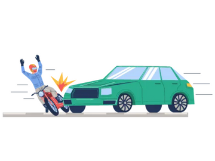

OR

Looking to insure your new bike?
Save big with your zero commission insurance

Bike insurance starting at ₹499*
OR
Looking to insure your new bike?
Save big with your zero commission insurance
Just as you make sure to buy the best motorcycle, scooter or even an electric scooter, you must also make sure that you protect your two-wheeler with bike insurance. As per The Motor Vehicles Act, 1988, you must insure your vehicle at least with Third-party Bike Insurance. Failure to adhere to this mandatory requirement may result in penalties
It is the most basic type of bike insurance that offers coverage against financial liabilities claimed by a third person. The third-party can raise a claim in case of damage to their vehicle or property or injury/death of the third party caused by an accident, where the insured (your) two-wheeler is at fault.
It is mandatory as per law, and if you are found riding the bike without this type of two-wheeler insurance policy, you could be liable for a penalty of Rs. 2,000 to Rs. 4,000 (subject to changes)
As per the Ministry of Road Transport and Highways (MoRTH) research wing, approximately 4.5 lakhs of road accidents occurred in 2019. The sheer high number of accidents increases the importance of having your bike insured at all times. Here are some of the reasons why you need Third-party Two-wheeler Insurance.
The table below provides an insight into the essential features of ACKO’s third-party bike insurance policy. The premium of the third-party bike insurance listed below is fixed by the Insurance Regulatory and Development Authority of India (IRDAI) and is based on the engine cubic capacity (cc).
| Key features | ACKO Two-wheeler 3rd Party Insurance Policy Benefits |
|---|---|
| Injuries to a third person | Unlimited liability cover |
| Property or vehicle damage to a third person | Up to Rs. 7.5 lakhs |
| Process to buy/renew/raise claims | 100% digital/online |
| Personal Accident Cover* | Up to Rs. 15 lakhs |
Here are some of the key benefits of Third-party two-wheeler insurance.
With new-age insurers such as ACKO, you can perform almost all transactions online. All you need is an internet-enabled smartphone or device to buy or renew the insurance plan online within a few clicks. It is that simple.
This type of bike insurance offers you financial protection against damages caused to the third party, especially expenses related to medical needs. It also provides a financial cover of up to Rs. 7.5 lakhs in case you accidentally cause damages to a third party’s vehicle or their property.
All vehicle owners must possess this type of two-wheeler insurance policy since it is mandatory as per The Motor Vehicles Act, 1988, ensuring you are not breaking any laws. It is also beneficial since your insurer settles third-party claims.
Accidents can dent your finances, especially when a third party suffers financial loss and you have to pay for the expenses. The plan provides you peace of mind knowing you can ride your bike without the stress of financial liabilities of the third person.
To insure your bike with this type of two-wheeler insurance requires less paperwork or documentation. The process can be completed with fewer formalities as compared to other bike insurance plans. It requires lower inspection or checks as it does not insure the vehicle.
The premium is relatively cost-effective compared to other types of bike insurance. As the IRDAI fixes the Third-party Liability Plan premium based on the engine cubic capacity, there are significantly fewer chances of a sudden price hike.
Here are exclusions under the Third-party Two-wheeler Insurance
If your vehicle causes damages to a third person’s property or vehicle; you are covered for the loss of up to Rs. 7.5 lakhs.
If your bike causes an accident and the third party is injured, all the medical expenses until recovery are covered under this plan. In case of unfortunate death, the plan offers unlimited liability coverage
If you have not opted for the Personal Accident Cover (PA) already, you can include it while purchasing this plan. It insures you against personal injury or death/permanent disabilities with coverage of up to Rs. 15 lakhs.
Here are exclusions under the Third-party Two-wheeler Insurance.
Damage to your bike due to an accident, natural or manmade calamities are not covered under the Third-party Liability Plan. You have to opt for Comprehensive Insurance to cover damages to your vehicle
If the owner/rider of the insured vehicle is found riding the vehicle without valid documents such as bike insurance policy, Driving Licence (DL), Registration Certificate (RC), etc., the insurer may reject your claim.
If the rider is found riding the bike under the influence of alcohol or drugs, your bike insurance will not cover for you in case of third party liabilities.
Here are the two-wheeler Third-party insurance rates applicable in India as of February 2022.
| ENGINE CAPACITY (CC) | THIRD-PARTY BIKE INSURANCE COST* |
|---|---|
| Up to 75 | Rs. 482 |
| 75 to 150 | Rs. 752 |
| 150 to 350 | Rs. 1193 |
| 350 and Above | Rs. 2323 |
*Prices are subject to change
The third-party bike insurance policy renewal is a simple procedure at ACKO. Follow the process below for a hassle-free experience.
Step 1:Visit our website or download our mobile app.
Step 2: Enter your vehicle number and click on ‘Insure now’
Step 3:Select the plan (1, 2 or 3 years) pay the premium to insure instantly
Step 1:Login to your account on our website or mobile app
Step 2:Select the policy against your bike.
Step 3:Select the plan (1, 2 or 3 years) and pay the premium to insure instantly.
Your policy document is sent immediately to your registered email address, or you may also download the policy from our website or mobile app.
The claim process for Third-party Two-wheeler Insurance Policy is simple and easy. Follow the process mentioned below for both policyholder and third person
In case a third person’s bike causes damages to your vehicle or property,
Ideally, the third party must file an FIR at the local police station.
Here are the documents needed to raise third-party claims
The high number of uninsured vehicles on the roads has prompted the Insurance Regulatory and Development Authority of India (IRDAI) to make bike insurance mandatory for all types of vehicles.
When you buy a brand new bike, it is compulsory to insure your bike with a 5-year Third-party Liability Plan along with a 1-year Own Damage plan (5-years TP Plan + 1-year Own Damage Plan). You also have the option to buy a 5-year Own Damage Plan.
Here are some of the advantages of long-term third-party bike insurance.
The Third-party Bike Insurance price is fixed by the IRDAI and not by the insurer (ACKO in this case). The cost is based on the cubic capacity of the bike’s engine. The regulator revises the Third-party Two-wheeler Insurance premium rates periodically.
You can check the Third-party Bike Insurance cost for your bike through our bike insurance premium calculator. It offers quotes for both annual and long-term plans.
The Comprehensive Bike Insurance Policy considers various factors such as the year of manufacture, the Insured Declared Value (IDV), and the vehicle model to determine insurance cost. However, the Third-party Two-wheeler Insurance Policy considers only a single factor while determining the vehicle's insurance cost which is the engine cubic capacity.
The cost of a Comprehensive Policy is calculated by ACKO, while the IRDAI determines the price of a Third-party Policy. The apex body fixes the rates based on the engine cubic capacity.
Also, read: No Claim Bonus (NCB) in Bike Insurance
An ideal approach to determine which is the best policy for your bike is to compare them based on the coverage and premium
Coverage
Third-party Insurance for your bike is compulsory as per The Motor Vehicles Act, 1988. However, it does not provide financial coverage in case of damages to your bike. The Comprehensive Bike Insurance Policy offers wide coverage since it provides financial coverage for both third-party liabilities and damages to your vehicle
Premium
The Third-party Insurance price is lower than the Comprehensive Bike Insurance Plan as the coverage is limited to third-party liabilities. As in the case of the Comprehensive insurance plan for bikes, it offers basic financial coverage for your bike, and it also has the option to enhance the coverage by including relevant add-on covers.
Here is why Third-party Two-wheeler Insurance is important for you.
Also, read: Comprehensive vs Third Party Two Wheeler Insurance